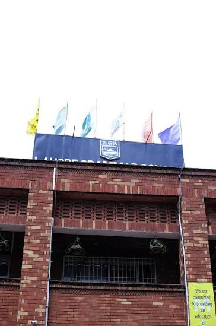

About Lahore Grammar School

Lahore Grammar School is a prestigious educational institution that has been providing exceptional learning experiences for over four decades. Our school is committed to fostering academic excellence, creative expression, and strong universal values.
We achieve this by combining a world-class academic curriculum with a wide range of sports, arts, and student clubs. Our dedicated teachers encourage students to think critically, challenge themselves, and discover their true passions. At our school, learning goes far beyond the classroom, ensuring every student graduates with the confidence and skills needed to lead in a changing world.
Competitions and Achievements
We encourage our students to push their boundaries through internal school competitions. Throughout the academic year, we host exciting events like science fairs, spelling bees, math olympiads, art exhibitions, and debating contests.
These events give every student a platform to showcase their unique talents, build confidence, and win recognition.Our school proudly participates in prestigious inter-school tournaments and national competitions.
From sports leagues and swimming galas to high-level Model United Nations (MUN) conferences, our students regularly compete with top schools across the country.
These events teach our students sportsmanship, teamwork, and how to connect with the wider student community.
Campus Facilities
Our school features fully equipped science and computer laboratories designed to bring lessons to life. Students get hands-on experience conducting chemistry experiments, studying biology, and learning how to code in computer class.
These modern labs give everyone the tools they need to build strong tech skills and think like real scientists.
Physical fitness and team spirit are major parts of daily life here.
Our students have access to excellent sports facilities, including green fields, basketball courts, and indoor sports complexes. Whether playing cricket, football, table tennis, or track and field, our sports programs teach students discipline, resilience, and healthy habits.
Global Outlook and Academic Excellence
At our school, we prepare students to succeed on a global stage by combining an international learning experience with our world-recognized Cambridge O-Level and A-Level programs. Through global competitions, student exchange programs, and international conferences like the Model United Nations (MUN), our students build deep cultural awareness and global networks. Backed by our highly qualified faculty and a rigorous curriculum that focuses on conceptual learning, our students consistently secure top academic distinctions globally and pave their way into the world’s most prestigious universities.